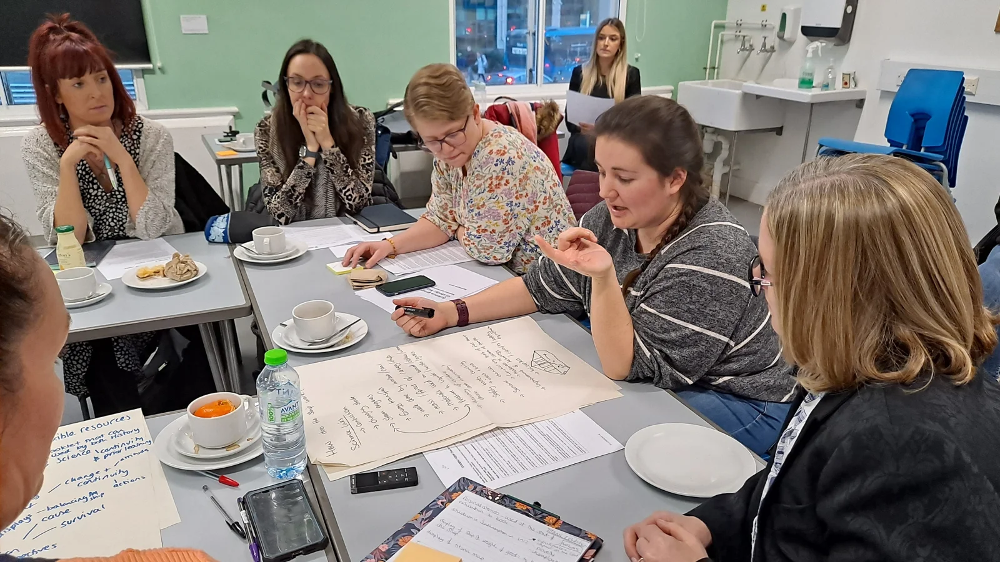

Make room
for enquiry.
Six lessons, from historical significance to watertight bulkheads. Explore lesson plans, editable slides and classroom materials.
Find teaching resourcesExplore the Titanic through science, history and the city it called home. A shared enquiry for teachers and educational researchers.

A collaboration between university researchers, museum educators and local teachers.
What can one event reveal when we look at it together?
Remembering Titanic brings science and history into conversation through an event with deep connections to Southampton. Teachers, museum educators and researchers worked together to develop a cross-curricular unit for Key Stage 3.
The project connects classroom enquiry with museum learning, local stories and sensitive approaches to teaching disaster.
Six lessons, from historical significance to watertight bulkheads. Explore lesson plans, editable slides and classroom materials.
Find teaching resourcesExplore the ideas, collaboration and research behind the unit: cross-curricular learning, place, museums and disaster education.
Read the research
Three professional development workshops brought together seven science and history teachers with the University of Southampton and SeaCity Museum.
Inside the workshops